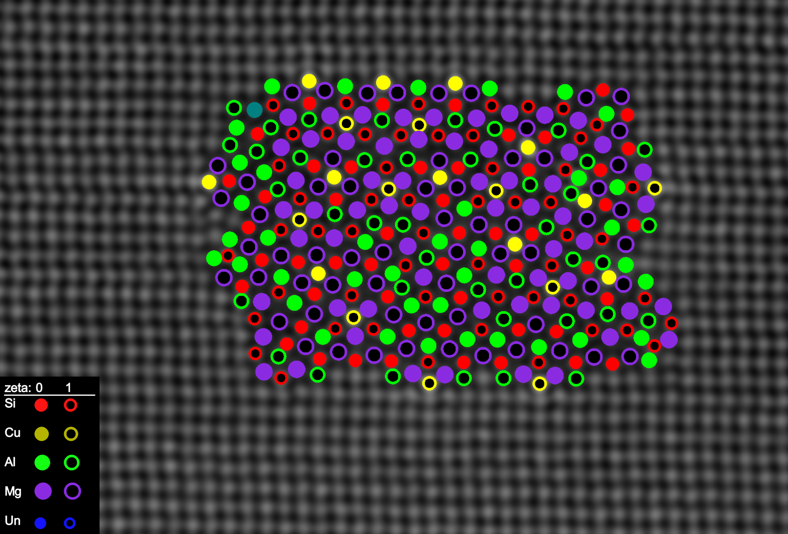

Atomic overlay of a hybrid L and Q’ precipitate¶
Welcome to the AutomAl 6000 home-page!¶
AutomAl 6000 is a stand-alone software tool for semi-automatic labelling of HAADF-STEM images of precipitates in the 6xxx aluminium alloys, developed as a part of my master-project in physics at NTNU. Main features include:
Basic column detection
Column characterization algorithm
Flexible statistical modelling
Atomic graphs for user interactions with the structure data
GUI
Imports dm3, TIFF and AtoMap file formats
Exports csv, png and svg file formats
Open-source
To find out more about the underlying methodology, take a look at the master thesis, or the AutomAl 6000 paper in Ultramicroscopy, available under the links section.
To get started with AutomAl, check out the guides provided on this web-site, or the youtube tutorial-series, also under the links section.